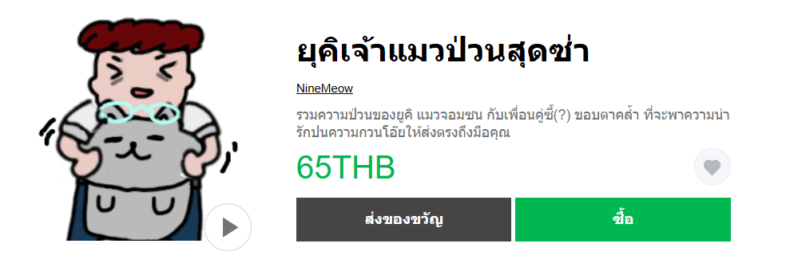

Game Project From Unity - MMI320
เป็นโปรเจคการสร้างเกมด้วย Unity ซึ่งเป็นเกมที่เราเล่นเป็นไม้เบสบอลคอยฟาดลูกบอลที่พุ่งเข้ามาใส่เรา และทำแต้มให้ได้มากที่สุด
Video From Quote Project - MAT104
เป็นโปรเจคทำหนังสั้นจาก Quote คำคมที่เลือกมา จึงได้เป็นหนังสั้นที่สื่อถึงความสำคัญของเวลาและแรงบันดาลใจในการทำงาน
Program "ภาษีหนีไม่พ้น" - MDT211
เป็นโปรเจคทำโปรแกรมแชทบอตเพื่อช่วยเสริมสร้างความรู้เรื่องภาษีและช่วยคำนวณภาษีให้ได้แบบง่ายดาย
StickerLine

เป็นโปรเจคทำสติ๊กเกอร์ไลน์ของตัวละครที่สร้างเอง มีทั้งหมด 24 รูปภาพ เป็นแบบวาดมือทั้งหมด
ดูสติ๊กเกอร์ไลน์ตรงนี้ได้เลยIn-Class Assignment - MDT312
1. เว็บไซต์สูตรอาหาร (General Tso’s Chicken) - Week3
เว็บไซต์ตัวอย่างสูตรอาหาร Gluten Free General Tso’s Chicken ที่แสดงการจัดวางส่วนผสมและขั้นตอนการทำอาหาร และมีการจัดทำเว็ปด้วยหลักการ CSS-Layout
View2. เว็บไซต์สูตรอาหาร (Pizzadip) - Week4
เว็บไซต์ตัวอย่างสูตรอาหาร Pizzadip ที่แสดงการจัดวางส่วนผสมและขั้นตอนการทำอาหารด้วยหลักการ Grid Display
View3. เว็บไซต์ Blogger - Week5
เว็บไซต์ Blogger ที่สามารถโพสต์ข้อความลงไปในหน้าเว็ปและสามารถกดเคลียร์ข้อความได้ โดยใช้ JavaScript
View4. เว็บไซต์ Register & Login - Week6
เว็บไซต์ระบบ Register และ Login แบบง่าย ๆ ที่สามารถเชื่อมถึงกันได้ด้วย URL Parameter
View5. เว็บไซต์ SquareGame - Week7
เว็บไซต์ SquareGame ที่เป็นเกมให้ผู้เล่นกรอกจำนวนสี่เหลี่ยมและสีที่ต้องการ เมื่อกดเริ่มเกม สี่เหลี่ยมจะ Spawn มาให้ผู้เล่นกดให้ครบก่อนเวลาจะหมด
View6. เว็บไซต์แสดงสินค้า - Week8
เว็บไซต์แสดงสินค้า ที่จะโชว์ข้อมูลของสินค้าโดยจะนำข้อมูลมาจาก JSON file แล้วใช้ตัวของ AJAX อ่านข้อมูล
View